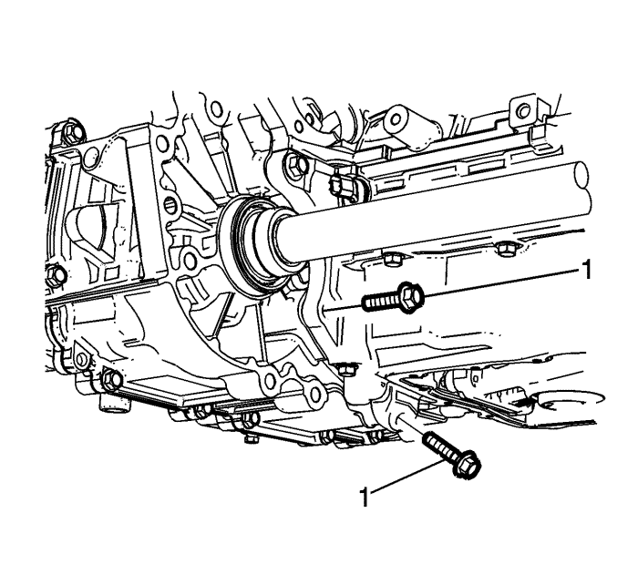
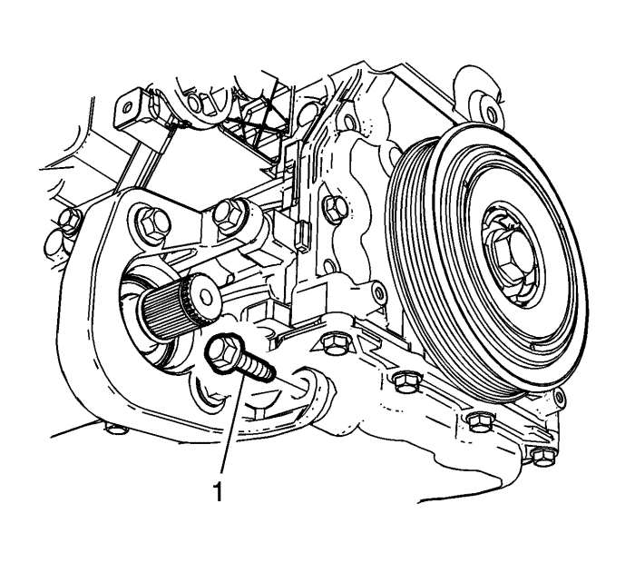
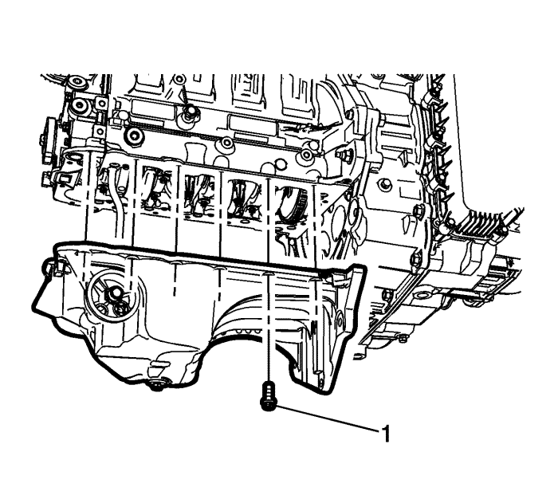
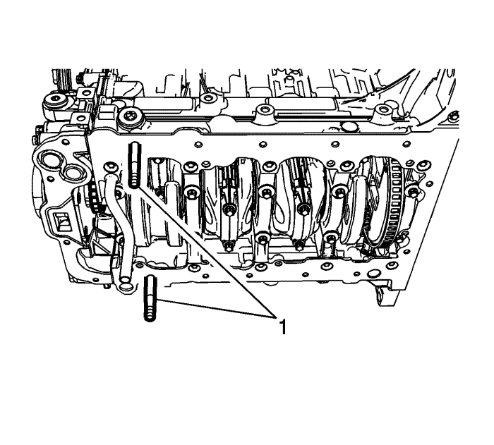
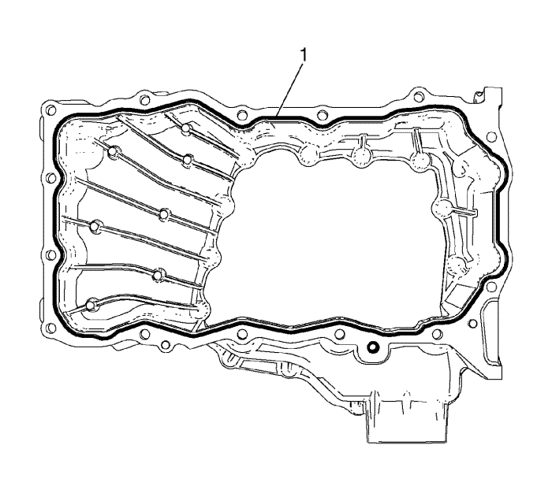
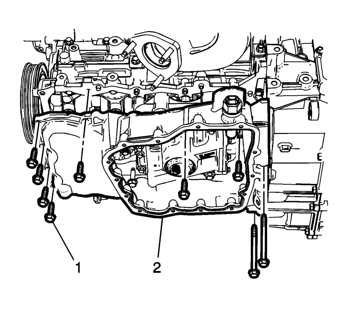

Sustitución del cárter de aceite superior
Herramientas especiales
EN-50435 Pasadores de guía
Para herramientas regionales equivalentes. Consultar Herramientas especiales .
Procedimiento de desmontaje
- Vacíe el aceite de motor. Consultar Sustitución del aceite de motor y filtro de aceite. .
- Retire el tubo delantero. Consultar Sustitución del tubo delantero : LNQ → LF1 → LE5 .
- Desmonte el cárter de aceite inferior. Consultar Sustitución del cárter de aceite : Parte inferior

- Desmonte los pernos (1) que unen el cárter de aceite al cambio.

- Si el vehículo está equipado con tracción a las cuatro ruedas (AWD), retire el tornillo del soporte de la caja de transferencia (1).

- Retire los tornillos del cárter de aceite (1) y el cárter de aceite (2).
Procedimiento de montaje
- Limpie la superficie de sellado de la placa de sujeción del sombrerete del cojinete del cigüeñal y la ranura de la cubierta delantera del motor para eliminar el material de sellado viejo, el aceite, la suciedad y la grasa.

- Monte los dos pasadores de guía EN-50435 (1) en los orificios roscados del cárter de aceite.

- Aplique sellador (Three-Bond, 12378521) sobre la línea para sellador (1).
Precaución: Consulte Precaución con las fijaciones en la sección Prólogo

Nota: El procedimiento de instalación del cárter de aceite debe completarse en 10 minutos.
- Coloque sin apretar los pernos del carter de aceite (1) en todos las ubicaciones excepto en las de los pasadores de guía.
- Monte los pasadores de guía EN-50435 y coloque el resto de los pernos del cárter de aceite.
- Apriete los tornillos del cárter de aceite hasta 25 N·m (18 lib. pie).
- Monte los pernos que unen cárter de aceite al cambio (1) y apriételos a 40 N·m (30 lib. pie).
- Monte los tornillos de la caja de transferencia (1) y apriételos hasta 40 N·m (30 lib. pie).
- Monte el cárter de aceite inferior. Consultar Sustitución del cárter de aceite : Parte inferior .
- Monte el tubo delantero. Consultar Sustitución del aceite de motor y filtro de aceite. .
- Rellene el aceite de motor. Consultar Sustitución del aceite de motor y filtro de aceite. .
| © Copyright Chevrolet Europe. All rights reserved |